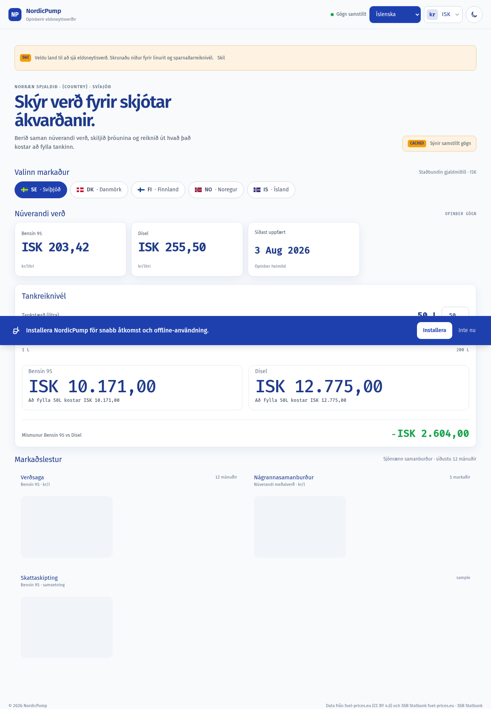
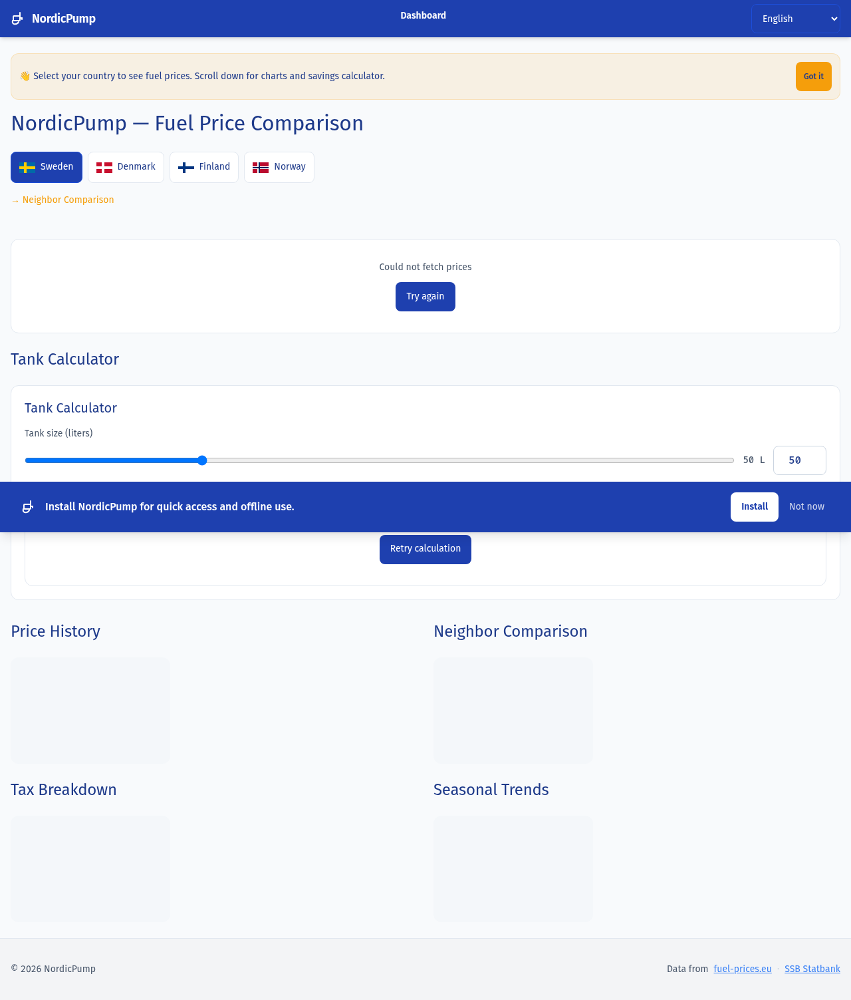

Guía de estudio · Arquitectura de software
NordicPump, la arquitectura de un comparador de precios nórdico
Una PWA mobile-first que unifica los precios de combustible de 5 países nórdicos, servidos desde un proxy/caché sin base de datos. Esto es el recorrido completo del dato: de la estación de servicio a tu pantalla.
Comparar precios cruzando una frontera es un infierno
Un conductor que cruza Suecia → Noruega no tiene forma fácil de comparar precios entre ambos países. Cada fuente oficial publica en formatos, cadencias y monedas distintas — y son 3-4 sitios que visitar a mano.
Fuentes dispares
Cada país publica en un sitio oficial distinto: fuel-prices.eu para SE/DK/FI, SSB Statbank para NO, gasvaktin.is para IS. Sin un estándar común.
fuel-prices.eu · SSB · gasvaktin
Cadencias distintas
Los datos no se actualizan al mismo ritmo: semanal en la UE, mensual en Noruega, quincenal en Islandia. Comparar datos de momentos distintos engaña.
semanal · mensual · quincenal
Monedas distintas
SEK, DKK, NOK, EUR e ISK. Comparar 18,50 SEK/l contra 23,40 NOK/l exige conversión mental — o una calculadora al lado.
SEK · DKK · NOK · EUR · ISK
¿Por qué NordicPump?
Resuelve una necesidad real del día a día nórdico, obliga a integrar APIs públicas reales con sus particularidades (cadencias, formatos, monedas) y produce un proyecto de portafolio que le habla directo al mercado técnico sueco: datos nórdicos, idiomas nórdicos, monedas nórdicas.
Un solo lugar, una sola moneda
NordicPump unifica las fuentes, normaliza todo a EUR internamente y deja que tú elijas en qué moneda ver los precios. El usuario pasa de 10 minutos de pestañas y calculadora a una sola pantalla.

Cuatro piezas, cero bases de datos
El sistema es un frontend Angular 22 que habla HTTP con un backend proxy/caché Litestar. Sin DB: la persistencia son archivos JSON con escrituras atómicas. Al scrollear, el diagrama resalta el componente que estás leyendo.
Frontend — la interfaz
La interfaz que ve el usuario, construida con Angular 22 (standalone components, signals, change detection OnPush). Es una PWA con service worker para funcionar offline.
Responsabilidades
- Dashboard: KPI cards con precios actuales
- Calculadora de tanque y gráficos (historial, comparativa, impuestos)
- 7 idiomas con ngx-translate (sv, da, nb, fi, en, es, is)
- Currency switcher en vivo: SEK / EUR / DKK / NOK / ISK
- Offline con service worker + fallback page
Estructura de carpetas
frontend/src/app/
├─ core/ — servicios + guards
├─ features/ — dashboard y about
├─ shared/ — charts, widgets, models
├─ layout/ — header y footer
└─ pwa/ — install prompt, freshness, offline

Glosario rápido
PWA: web que se instala como app nativa, con icono en pantalla de inicio y funcionamiento offline. · Standalone component: componente Angular sin NgModule, el patrón moderno desde Angular 14+. · Signal: caja reactiva que avisa a la UI cuando cambia; reemplaza al Observable para estado local.
HTTP Contract — el puente
La comunicación frontend ↔ backend está documentada explícitamente en api-contract.yaml porque el análisis estático no infiere llamadas HTTP — solo ve los imports.
| Endpoint | Frontend caller | Backend handler | Service |
|---|---|---|---|
GET /api/v1/prices/{country} | PriceApiService.fetch() | prices.py | PriceQueryService.resolve() |
GET /api/v1/rates | CurrencyService.loadRates() | rates.py | IngestionPipeline.get_rates() |
GET /health | monitoring | health.py | función pura |
Contract test — los dos lados hablan el mismo idioma
price.contract.spec.ts lee el código Python y el TypeScript y compara que los campos y enums coincidan. Si alguien cambia un lado, el test revienta.
Backend — el proxy/caché
Construido con Litestar (framework ASGI de Python, alternativa moderna a FastAPI). Sin base de datos: el caché vive en archivos JSON en disco. Seis capas, de afuera hacia adentro:
Routes
Reciben HTTP, validan el país, delegan al service. No tienen lógica de negocio.
Services
PriceQueryService (lee caché, cache-first) e IngestionPipeline (escribe caché, orquesta ingestión).
Cache
CacheStore (I/O atómica) y CacheFreshness (lógica de tiempo).
Ingestion
Parsers por fuente externa: fuel_prices_eu, ssb, iceland, ecb_rates.
Scheduler
Scheduler in-process async que dispara ingestión según las cadencias de cada fuente.
Models
PriceRecord, Country (StrEnum), FuelType, CountryMeta.
Glosario rápido
ASGI: Asynchronous Server Gateway Interface — el estándar de Python para web servers async (lo usan Litestar, FastAPI y Starlette). · Litestar: framework web con tipado estricto, validación Pydantic y OpenAPI automático. Más opinionated que FastAPI.
Cache file-based — el corazón
Nada de SQLite ni Redis: archivos JSON en disco con dos trucos clave que lo hacen robusto:
Escrituras atómicas
tempfile + os.replace (POSIX rename). El archivo nunca queda corrupto a medias: se escribe en un temporal y se renombra atómicamente. Si el proceso muere a la mitad, el original sigue intacto.
Índices por país
Además del archivo principal (fuel-prices-eu.json), un índice por país (_idx_SE.json, _idx_DK.json…). Así PriceQueryService lee el archivo del país sin escanear toda la lista — lookup O(1).
Glosario rápido
Escritura atómica: el archivo se escribe completo o no se escribe nada — nunca queda a medias. O(1) lookup: tiempo constante sin importar cuántos datos haya. POSIX: estándar UNIX (Linux, macOS); os.replace invoca la syscall atómica de rename.
Ingestión — APIs externas
Cada fuente externa tiene su propio parser y su propia cadencia, respetando cuándo publica cada una:
| Fuente | Parser | Países | Cadencia | Por qué |
|---|---|---|---|---|
| fuel-prices.eu | fuel_prices_eu.py | SE, DK, FI | Domingos | Snapshot semanal los domingos |
| SSB Statbank | ssb.py | NO | 1° + día 15 | Tabla mensual a mediados de mes |
| gasvaktin.is | iceland.py | IS | Ventana 2 días | Estaciones cada 15 min, cache 2 días |
| ECB | ecb_rates.py | (rates) | Diario | Reference rates diarios del BCE |
Atención: Islandia no es UE
El BCE no publica EUR→ISK. NordicPump usa open.er-api.com como fuente para ISK, con fallback hardcodeado (eur_isk_fallback: 140.00) si esa API también cae.
¿Qué pasa cuando eliges Noruega?
El patrón es cache-first: primero se mira el caché. Solo se refresca si está viejo (stale) o no existe (miss). Tres caminos posibles:
Caché fresco
HITUsuario
Selecciona "NO"
Frontend → BackendGET /api/v1/prices/NO
Backend → CacheCacheStore.read("ssb-no")
Respuesta
200 + X-Cache: HIT · render KPI + charts
Caché stale
REFRESHEDBackendIngestionPipeline.refresh(NO)
Scheduler → APIs externas
fetch SSB Statbank
Scheduler → CacheCacheStore.write("ssb-no")
Respuesta
200 + X-Cache: REFRESHED
Caché miss
503 · Retry-AfterBackendIngestionPipeline.refresh(NO)
Ingestión OK
write → 200 + REFRESHED
Ingestión falla
503 + Retry-After · el usuario ve un error traducido
¿Qué significa el header X-Cache?
Indica de dónde vino la respuesta: HIT (caché fresco), REFRESHED (se actualizó en esta request), STALE (se sirvió viejo porque la actualización falló). Con Retry-After, el backend dice "intenta de nuevo en N segundos".
Tecnologías elegidas, con su porqué
| Capa | Tecnología | Versión | Por qué |
|---|---|---|---|
| Frontend | Angular | 22 | Standalone components + signals son el presente de Angular. Stack demandado en el mercado sueco. |
| Backend | Litestar | latest | Framework ASGI con tipado estricto + OpenAPI. Te empuja a hacerlo bien. |
| Runtime | Python | 3.14 | StrEnum, performance, match statements. |
| Cache | JSON files | — | Sin DB. Atomic writes + índices por país. Suficiente para ~5 países × 2 combustibles. |
| Charts | Chart.js | 4.x | Doughnuts y line charts, tree-shakeable con registro manual. |
| i18n | ngx-translate | latest | Maduro, soporta 7 idiomas con interpolación {{param}}. |
| Tests FE | Vitest | 4.x | Rápido, jsdom, integración con Angular unit-test builder. |
| Tests BE | pytest | latest | Markers unit/integration, pytest-asyncio. |
| Tipado | mypy strict | — | noPropertyAccessFromIndexSignature fuerza acceso por ['key']. |
| Linting | ruff | latest | Line-length 120, select E,F,I,N,W,UP. |
Cada decisión tuvo una alternativa descartada con razón
Estas son las 8 decisiones más importantes. Aprender a descartar con argumentos vale más que aprender a elegir.
Framework backend
Litestar empuja tipado estricto + estructura limpia. FastAPI es muy libre (cada quien lo arma distinto). Django es overkill para un proxy/caché sin DB.
Persistencia
El dataset es chico (~10 registros por país × 5 países). SQLite agrega dependencia y migraciones; Redis es infra externa. JSON + atomic rename es suficiente y portátil.
Scheduler
Una sola instancia, sin workers distribuidos. Async in-process evita dependencias externas (Redis broker para Celery) y funciona igual en dev y prod.
Enum de país
StrEnum serializa directo a "SE" en JSON sin .value. Menos código, menos bugs.
Lazy charts
@defer (on viewport)Los charts son caros (Chart.js). @defer los carga al scrollear. Gotcha: Playwright fullPage screenshot NO los dispara — hay que scrollear programáticamente en tests.
Source of truth del país
countries.json + codegenPython y TypeScript son runtimes distintos: no pueden compartir código. Un JSON fuente que genera el enum Python + el type TS elimina la deuda de "5 lugares que tocar por país nuevo".
Escritura atómica
os.replace es atómico a nivel syscall. Un lock agrega edge cases (proceso muere con el lock tomado). Rename es más simple y garantiza consistencia.
Signals vs RxJS
Signals son el futuro de Angular (reactividad simple). RxJS sigue para eventos complejos (HTTP, debouncing), pero para estado local los signals son más legibles y performantes.
El sistema también se rompe — así, y así responde
Crítico: caché vacío + ingestión caída → 503
Si el caché está vacío (miss) Y la ingestión falla (API externa caída), el backend devuelve 503 con Retry-After. El usuario ve un mensaje de error traducido. No hay degradación elegante más allá de eso — no podemos inventar precios.
ECB caído → fallbacks hardcodeados
Si el BCE no responde, los rates EUR→SEK/DKK/NOK usan fallback (11.50, 7.45, 12.00). Los precios convertidos pueden estar ligeramente desactualizados. Para ISK el fallback es 140.00 vía open.er-api.com.
La isla desconectada
El grafo de conocimiento del proyecto muestra 0 edges entre frontend y backend por defecto (el análisis estático no infiere HTTP). Se soluciona con api-contract.yaml + scripts/inject_contract_edges.py que inyecta los edges manualmente.
Funciona para 5 países y un usuario. Si crece…
Más países (ej. Bálticos)
Editar countries.json + correr python scripts/generate_countries.py. Solo las traducciones i18n y el flag SVG son manuales — el resto se autogenera.
Más concurrencia
El file-based cache funciona mientras un solo proceso escribe. Para multi-proceso, migrar a SQLite o Redis. Refactor pequeño: CacheStore solo tiene 3 métodos públicos (read, write, exists).
Histórico largo
Hoy el caché guarda solo el snapshot más reciente. Para series temporales: append-only al archivo (lista de snapshots) o tablas SQLite por país.
15 términos para sonar como alguien que entiende
Todo el vocabulario de NordicPump, en una grilla. Haz click para expandir.
ASGI
Atomic write
Cache-first
Cadence
Codegen
countries.json genera el enum Python y el type TypeScript.Contract test
Ingestion
Litestar
O(1) lookup
POSIX
os.replace invoca la syscall atómica de rename.PWA
Signal
Standalone component
StrEnum
.value.X-Cache header
El proyecto aún no termina
Lo que queda por hacer. Tilda lo que vayas completando — el estado se guarda en tu navegador.